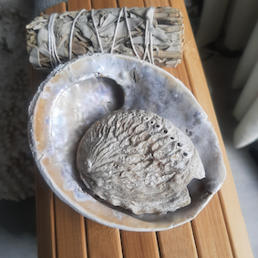

Verzorging
Het opladen van stenen zorgt ervoor dat de werking van de steen niet verzwakt of een negatieve werking krijgt. De bergkristal kan in de nacht opgeladen worden door maanlicht. In de ochtend kan je de steen ook opladen door deze in een abaloneschelp te leggen. Nadat de bergkristal is opgeladen kan deze ook andere stenen opladen waardoor deze ook weer versterkt worden. Witte Salie wordt ook gebruikt voor het reinigen van stenen, dit wordt gedaan door deze aan te steken en de rook over de edelstenen te bewegen. Salie zorgt ervoor dat negatieve energie verdwijnt. Omdat bergkristal uit de natuur komt, is de steen ook te reinigen met stromend water. Niet alle stenen zijn te reinigen met water. Op de afbeelding staat bovenin de salie en daaronder een grote abalone schelp met daarin een kleine abolone schelp, de abalone schelp is te herkennen aan de glimmende zilveren binnenkant.
